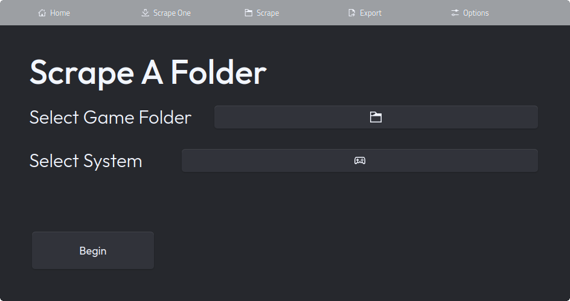
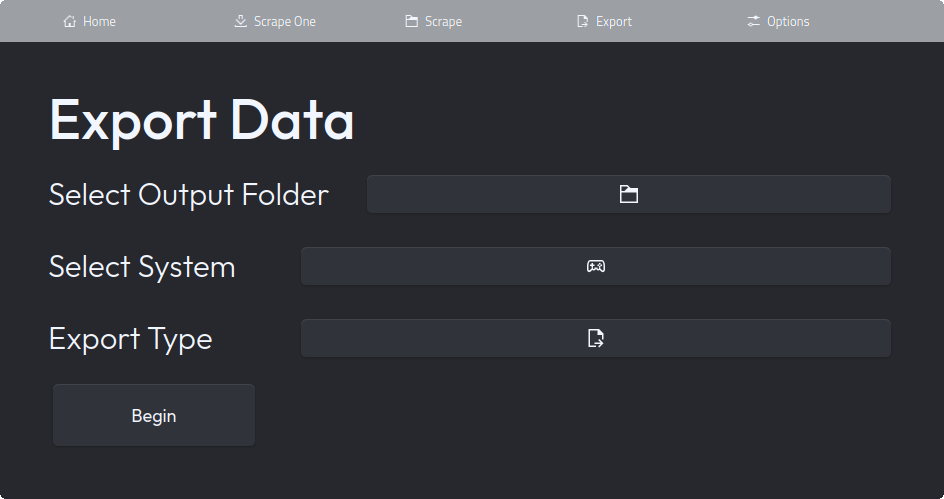

Features
Feature List
Simple GUI
With bigscraper-qt, you get a simple to use graphical interface. While easy to use, it does provide the necessary features to scrape with full capabilities. Check out some screenshots here.
LaunchBox Scraping & More
Bigscraper-qt allows you to scrape the LaunchBox Games Database, a database of metadata for many systems. With LaunchBox, you can collect metadata not only for retro consoles, but for modern systems and PC games as well.
Not only that, but scraping with ScreenScraper and Arcade Database is also available.
Video By Default
Bigscraper-qt downloads video by default, downloading video from the links LaunchBox provides. Please note that consistency in the videos LaunchBox provides is nonexistent, as videos range from short clips to longplays. As a result, video downloads are restricted to up to 5 minutes by default.
Easily Export to Pegasus
Using bigscraper-qt, you can easily export metadata to the format used by Pegasus Frontend. Choosing to export to Pegasus is as simple as choosing the option; when exporting, all data is automatically organized.
Controller Support
You can mostly navigate the UI of bigscraper-qt with a controller. Outside of the file and folder dialogs, using bigscraper-qt with a controller is simple.
Simple Installation
Bigscraper-qt is easy to install. Simply download the AppImage or Flatpak, and run it. AppImages and Flatpaks are supported on most common Linux distros.
Screenshot Gallery
Welcome Screen
Scrape Screen
Export Screen

Options Screen
These Images were taken with the Lightly Theme for Qt. The top bar is slightly transparent.